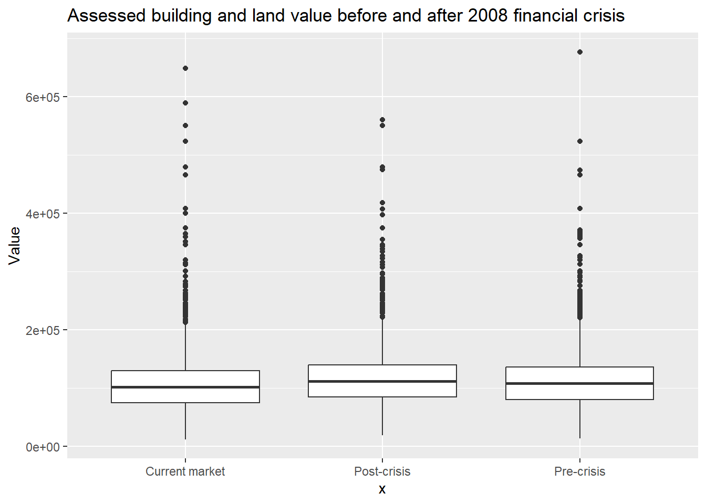
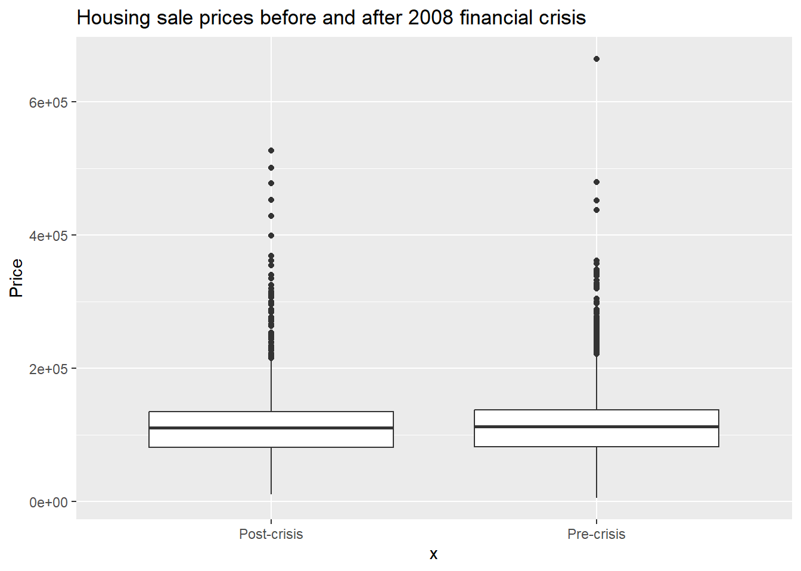
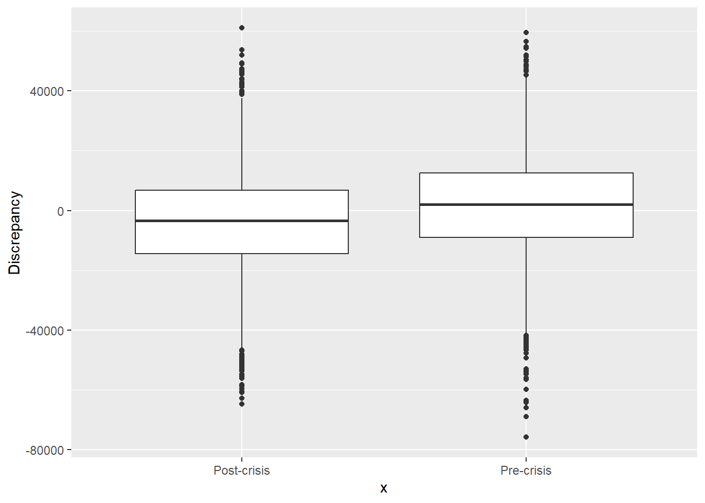
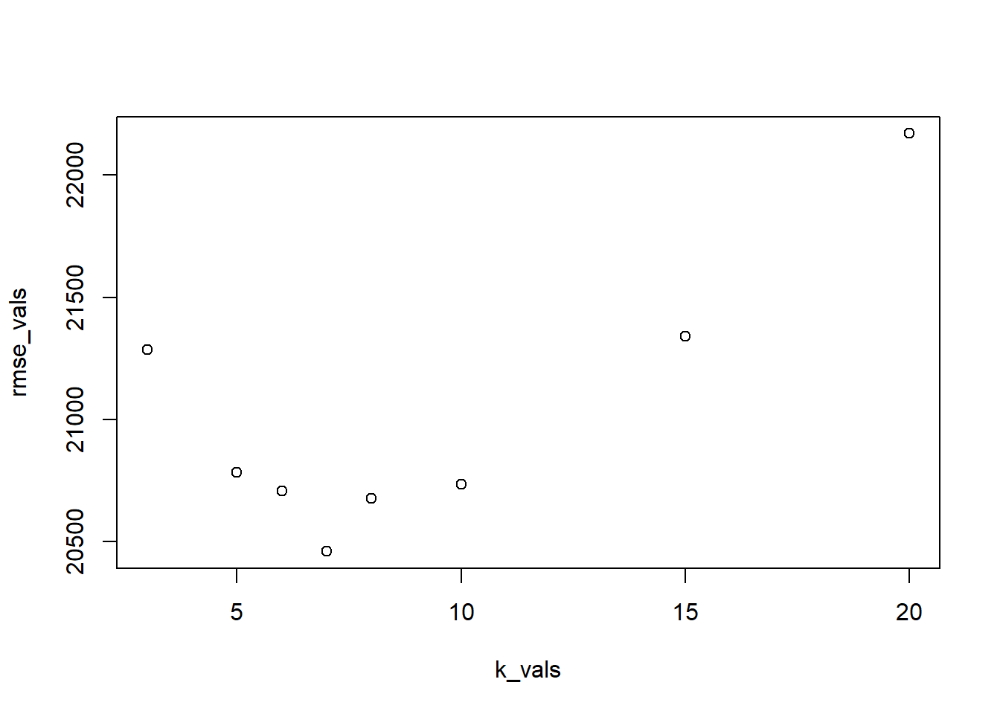

── Attaching core tidyverse packages ──────────────────────── tidyverse 2.0.0 ──
✔ dplyr 1.1.2 ✔ readr 2.1.4
✔ forcats 1.0.0 ✔ stringr 1.5.0
✔ ggplot2 3.4.3 ✔ tibble 3.2.1
✔ lubridate 1.9.2 ✔ tidyr 1.3.0
✔ purrr 1.0.2
── Conflicts ────────────────────────────────────────── tidyverse_conflicts() ──
✖ dplyr::filter() masks stats::filter()
✖ dplyr::lag() masks stats::lag()
ℹ Use the conflicted package (<http://conflicted.r-lib.org/>) to force all conflicts to become errors
library(caret)
Loading required package: lattice
Attaching package: 'caret'
The following object is masked from 'package:purrr':
lift
library(FNN)
pre <-read.csv("PreCrisisCV.csv")post <-read.csv("PostCrisisCV.csv")market <-read.csv("OnMarketTest.csv")
LHBA House Pricing Model
To the best of your ability, strive develop a clear description of the LHBA’s big-picture business problem. Then define some more clearly defined sub-problems that would be more specific questions or problems whose solution would be inline with solving LHBA’s problem.
The Local Home Builder’s Association’s business relies on accurate house pricing prediction. Historically, they have used county-assessed home values, which were typically similar to the final sale price of each home. However, due to the 2008 financial crisis, market forces have caused house prices to differ significantly from their assessed values. Thus, a new pricing model which takes into account current house pricing trends is necessary for LHBA, as their revenue model relies on the purchase, sale, lending, and construction of homes.
Some sub-problems/questions might include:
What is the difference in housing pricing patterns before and after the market crash? How does this affect the pricing of the products LHBA offers? What are other companies that offer similar products to LHBA doing about this issue?
What is the current pricing model dependent on and why is it not in line with market realities?
What predictive factors/data do we have access to for building our model?
Write 3 high quality questions you would want to ask LHBA stakeholders to follow up and get more information or insight into their business.
What are some instances in which the county-assessed valuation has significantly differed from the sale price of the house? How did this affect LHBA’s revenue or decision-making process?
How will the new pricing model be incorporated into LHBA’s day-to-day operations? Who will be accessing the predictions and what will they use them for? Is interprability or accuracy a greater concern?
How has the financial crisis affected LHBA in ways other than the obsolete pricing model? Are there any specific business issues LHBA is facing that we should take into account while building the new model?
Translate LHBA’s framed business problem into an analytics problem (i.e., numbers/measures to calculate, things to predict, how to visualize or present those things to affect a decision, etc.). Make sure to connect your business / analytic problems to decisions that need to be made and ask yourself if the “data science” will improve the decision and what the value of the improved decision making could be.
Our goal is to build a regression model to predict home prices in order for LHBA to make informed, data-driven business decisions that will allow the business and their clients to make the most out of their products and services. We will train our model using relevant factors including lot size, square footage, number of beds/baths, age of house, and condition, among others. By performing cross-validation, we will be able to test our model and assess its accuracy.
Write a couple of paragraphs describing how CRISP-DM would apply to the process of providing LHBA with a solution.
The first step to solving this issue using the CRISP-DM approach is getting an understanding of the business problem at hand. This would involve communicating with LHBA about their experiences surrounding the issue and figuring out what the business needs from you as a data scientist.
Next, we need to understand the data we have, and the data we need. In our context, we have pre- and post-crisis housing price datasets, as well as a dataset with current house listings in the area which haven’t sold yet. Our goal in this step is to understand what each column is and what the values in these columns mean. We also need to assess the quality of our data. Do we have missing values? Are there values that don’t make sense in context? This also incorporates the next step in CRISP-DM, data preparation. Here, we use the understanding we’ve gained about our datasets and clean them up accordingly. This includes dealing with missing values through methods like imputation, or dropping columns we deem unnecessary. We also normalize our numerical variables to get values on a similar scale.
Prepare the data as necessary and train a model to predict home selling prices, making sure to evaluate its performance on the test data and interpret the error and its meaning for LHBA operations.
Exploratory Data Analysis
#add together lot and building value to get total appraised valuepre$Value <- pre$LandValue + pre$BuildingValuepost$Value <- post$LandValue + post$BuildingValuemarket$Value <- market$LandValue + market$BuildingValue
ggplot() +geom_boxplot(data = pre, aes(y = Value, x ="Pre-crisis")) +geom_boxplot(data = post, aes(y = Value, x ="Post-crisis")) +geom_boxplot(data = market, aes(y = Value, x ="Current market")) +ggtitle("Assessed building and land value before and after 2008 financial crisis")

Median assessed values from before and after the financial crisis, as well as current market listings, are not significantly different.
ggplot() +geom_boxplot(data =pre, aes(x ="Pre-crisis", y = Price)) +geom_boxplot(data =post, aes(x ="Post-crisis", y = Price)) +ggtitle("Housing sale prices before and after 2008 financial crisis")

pre$Discrepancy <- pre$Price - pre$Valuepost$Discrepancy <- post$Price - post$Valueggplot() +geom_boxplot(data = pre, aes(x ="Pre-crisis", y = Discrepancy)) +geom_boxplot(data = post, aes(x ="Post-crisis", y = Discrepancy))

pre_tbl <- pre %>%select(c(Value, Price, Discrepancy)) %>%summarize_all(mean)post_tbl <- post %>%select(c(Value, Price, Discrepancy)) %>%summarize_all(mean)tbl <-rbind(pre_tbl, post_tbl, make.row.names =TRUE)rownames(tbl) <-c("Pre-crisis", "Post-crisis")tbl
Before the crisis, the mean home price was higher than the mean home value, and the opposite was true for after the crisis. This means that houses in the area went from being sold for, on average, $1216 over county-assessed value, to being sold for, on average, $4579 under county-assessed value.
Data Pre-processing
summary(pre)
Property LandValue BuildingValue Acres
Min. : 1.0 Min. : 2300 Min. : 4700 Min. :0.050
1st Qu.: 495.2 1st Qu.: 16000 1st Qu.: 62000 1st Qu.:0.160
Median : 989.5 Median : 20800 Median : 86000 Median :0.180
Mean : 989.5 Mean : 22167 Mean : 92819 Mean :0.223
3rd Qu.:1483.8 3rd Qu.: 27100 3rd Qu.:111400 3rd Qu.:0.230
Max. :1978.0 Max. :124500 Max. :552300 Max. :5.570
AboveSpace Basement Deck Baths
Min. : 412 Min. : 0.0 Min. : 0.00 Min. :0.000
1st Qu.: 864 1st Qu.: 0.0 1st Qu.: 0.00 1st Qu.:1.000
Median :1052 Median : 0.0 Median : 0.00 Median :1.000
Mean :1161 Mean : 126.4 Mean : 76.67 Mean :1.263
3rd Qu.:1372 3rd Qu.: 220.0 3rd Qu.:132.00 3rd Qu.:1.000
Max. :4414 Max. :1842.0 Max. :980.00 Max. :4.000
Toilets Fireplaces Beds Rooms
Min. :0.0000 Min. :0.0000 Min. :1.000 Min. :1.000
1st Qu.:0.0000 1st Qu.:0.0000 1st Qu.:2.000 1st Qu.:2.000
Median :0.0000 Median :0.0000 Median :3.000 Median :3.000
Mean :0.2437 Mean :0.3038 Mean :2.701 Mean :2.709
3rd Qu.:0.0000 3rd Qu.:1.0000 3rd Qu.:3.000 3rd Qu.:3.000
Max. :2.0000 Max. :3.0000 Max. :7.000 Max. :8.000
AC Age Car PoorCondition
Min. :0.0000 Min. : 1.00 Min. : 0.00 Min. :0.00000
1st Qu.:1.0000 1st Qu.: 47.40 1st Qu.: 0.00 1st Qu.:0.00000
Median :1.0000 Median : 59.70 Median : 0.00 Median :0.00000
Mean :0.7872 Mean : 61.57 Mean : 72.49 Mean :0.06067
3rd Qu.:1.0000 3rd Qu.: 84.30 3rd Qu.: 0.00 3rd Qu.:0.00000
Max. :1.0000 Max. :139.10 Max. :997.00 Max. :1.00000
GoodCondition Price Value Discrepancy
Min. :0.000 Min. : 5891 Min. : 13700 Min. :-75819
1st Qu.:0.000 1st Qu.: 82477 1st Qu.: 79825 1st Qu.: -9052
Median :1.000 Median :112789 Median :107750 Median : 2106
Mean :0.639 Mean :116202 Mean :114986 Mean : 1216
3rd Qu.:1.000 3rd Qu.:138046 3rd Qu.:135900 3rd Qu.: 12490
Max. :1.000 Max. :664874 Max. :676800 Max. : 59400
summary(post)
Property LandValue BuildingValue Acres
Min. :3979 Min. : 1900 Min. : 2500 Min. :0.0000
1st Qu.:4393 1st Qu.: 16600 1st Qu.: 65400 1st Qu.:0.1600
Median :4807 Median : 21700 Median : 88700 Median :0.1800
Mean :4807 Mean : 23165 Mean : 95008 Mean :0.2321
3rd Qu.:5221 3rd Qu.: 28100 3rd Qu.:113500 3rd Qu.:0.2400
Max. :5635 Max. :132900 Max. :483300 Max. :3.3000
AboveSpace Basement Deck Baths
Min. : 400 Min. : 0.0 Min. : 0.0 Min. :0.000
1st Qu.: 880 1st Qu.: 0.0 1st Qu.: 0.0 1st Qu.:1.000
Median :1060 Median : 0.0 Median : 0.0 Median :1.000
Mean :1167 Mean : 131.6 Mean : 77.1 Mean :1.272
3rd Qu.:1370 3rd Qu.: 250.0 3rd Qu.: 140.0 3rd Qu.:1.000
Max. :3979 Max. :2100.0 Max. :1476.0 Max. :4.000
Toilets Fireplaces Beds Rooms
Min. :0.0000 Min. :0.0000 Min. :1.000 Min. : 1.000
1st Qu.:0.0000 1st Qu.:0.0000 1st Qu.:2.000 1st Qu.: 2.000
Median :0.0000 Median :0.0000 Median :3.000 Median : 2.000
Mean :0.2396 Mean :0.3144 Mean :2.678 Mean : 2.684
3rd Qu.:0.0000 3rd Qu.:1.0000 3rd Qu.:3.000 3rd Qu.: 3.000
Max. :2.0000 Max. :3.0000 Max. :5.000 Max. :10.000
AC Age Car PoorCondition
Min. :0.0000 Min. : 1.10 Min. : 0.00 Min. :0.00000
1st Qu.:1.0000 1st Qu.: 48.20 1st Qu.: 0.00 1st Qu.:0.00000
Median :1.0000 Median : 59.80 Median : 0.00 Median :0.00000
Mean :0.8021 Mean : 61.57 Mean : 74.38 Mean :0.07845
3rd Qu.:1.0000 3rd Qu.: 84.70 3rd Qu.: 0.00 3rd Qu.:0.00000
Max. :1.0000 Max. :146.50 Max. :984.00 Max. :1.00000
GoodCondition Price Value Discrepancy
Min. :0.0000 Min. : 10453 Min. : 18700 Min. :-64749
1st Qu.:0.0000 1st Qu.: 81249 1st Qu.: 84400 1st Qu.:-14500
Median :1.0000 Median :111081 Median :111400 Median : -3368
Mean :0.6071 Mean :113594 Mean :118173 Mean : -4579
3rd Qu.:1.0000 3rd Qu.:135021 3rd Qu.:139300 3rd Qu.: 6722
Max. :1.0000 Max. :527404 Max. :560000 Max. : 61028
summary(market)
Property LandValue BuildingValue Acres
Min. :3636 Min. : 2800 Min. : 6000 Min. :0.0570
1st Qu.:4136 1st Qu.: 15000 1st Qu.: 59000 1st Qu.:0.1537
Median :4636 Median : 19500 Median : 81300 Median :0.1780
Mean :4636 Mean : 21109 Mean : 87762 Mean :0.2238
3rd Qu.:5135 3rd Qu.: 26025 3rd Qu.:106600 3rd Qu.:0.2310
Max. :5635 Max. :132900 Max. :576600 Max. :3.8500
AboveSpace Basement Deck Baths Toilets
Min. : 412 Min. : 0 Min. : 0.00 Min. :1.000 Min. :0.0
1st Qu.: 864 1st Qu.: 0 1st Qu.: 0.00 1st Qu.:1.000 1st Qu.:0.0
Median :1040 Median : 0 Median : 0.00 Median :1.000 Median :0.0
Mean :1142 Mean : 113 Mean : 72.47 Mean :1.239 Mean :0.2
3rd Qu.:1330 3rd Qu.: 141 3rd Qu.: 120.00 3rd Qu.:1.000 3rd Qu.:0.0
Max. :5112 Max. :1400 Max. :1476.00 Max. :4.000 Max. :2.0
Fireplaces Beds Rooms AC
Min. :0.0000 Min. :1.000 Min. :1.000 Min. :0.0000
1st Qu.:0.0000 1st Qu.:2.000 1st Qu.:2.000 1st Qu.:1.0000
Median :0.0000 Median :3.000 Median :2.000 Median :1.0000
Mean :0.2675 Mean :2.658 Mean :2.664 Mean :0.7715
3rd Qu.:0.0000 3rd Qu.:3.000 3rd Qu.:3.000 3rd Qu.:1.0000
Max. :3.0000 Max. :6.000 Max. :8.000 Max. :1.0000
Age Car PoorCondition GoodCondition
Min. : 2.743 Min. : 0.00 Min. :0.000 Min. :0.000
1st Qu.: 51.775 1st Qu.: 0.00 1st Qu.:0.000 1st Qu.:0.000
Median : 62.784 Median : 0.00 Median :0.000 Median :1.000
Mean : 66.449 Mean : 67.08 Mean :0.072 Mean :0.643
3rd Qu.: 88.050 3rd Qu.: 0.00 3rd Qu.:0.000 3rd Qu.:1.000
Max. :1375.655 Max. :1000.00 Max. :1.000 Max. :1.000
Price Value
Min. :0 Min. : 12100
1st Qu.:0 1st Qu.: 75175
Median :0 Median :102000
Mean :0 Mean :108871
3rd Qu.:0 3rd Qu.:129525
Max. :0 Max. :648200
pre %>%summarise_all(funs(sum(is.na(.))))
Warning: `funs()` was deprecated in dplyr 0.8.0.
ℹ Please use a list of either functions or lambdas:
# Simple named list: list(mean = mean, median = median)
# Auto named with `tibble::lst()`: tibble::lst(mean, median)
# Using lambdas list(~ mean(., trim = .2), ~ median(., na.rm = TRUE))
Warning: `funs()` was deprecated in dplyr 0.8.0.
ℹ Please use a list of either functions or lambdas:
# Simple named list: list(mean = mean, median = median)
# Auto named with `tibble::lst()`: tibble::lst(mean, median)
# Using lambdas list(~ mean(., trim = .2), ~ median(., na.rm = TRUE))
There are no NA values in our datasets. Some numerical variables, like Basement and Deck, have 0’s, which represents homes which don’t have basements or decks. There are also 0’s in factor type variables like PoorCondition and GoodCondition.
Factor Variables
Bathrooms
There are 2 bathroom columns, Baths and Toilets. Baths is the number of full baths, toilets is the number of half baths. We can add these together by multiplying the number of Toilets by .5 and adding that number to Baths.
PoorCondition, GoodCondition, AC (categorical variables – KNN regression requires numerical variables. Assigning 1 and 0 as numerical values for these variables led to significantly larger residuals.)
Property (ID variable)
Toilets (we incorporated this into Baths)
pre <- pre %>%select(-c(Value, PoorCondition, Property, Discrepancy, AC, GoodCondition))post <- post %>%select(-c(Value, PoorCondition, Property, Discrepancy, AC, GoodCondition))market <- market %>%select(-c(Value, PoorCondition, Property, AC, GoodCondition))
Building the Model
We will use a KNN regression model for this problem. KNN is, essentially, finding “neighbors” (other observations with similar predictor values), and making predictions based on those neighbors. This is useful as housing prices are market dependent, so the sale price should theoretically be similar between houses with similar stats.
We will be using the post-crisis dataset to train and test our model. Once we are happy with our model’s accuracy, we will use it to make predictions on the current market dataset to provide to LHBA.
set.seed(567)samp =createDataPartition(post$Price, p =0.7, list =FALSE)training = post[samp, ]testing = post[-samp,]rm(samp)
x_train <- training %>%select(-Price)y_train <- training$Pricex_test <- testing %>%select(-Price)
k_vals =c(3, 5, 6, 7, 8, 10, 15, 20)k =1rmse_vals <-c()for (k in k_vals){model <-knn.reg(train = x_train, test = x_test, y = y_train, k = k)rmse <-sqrt(mean((model$pred - testing$Price)^2))rmse_vals <-append(rmse_vals, rmse)printrmse <-paste0("RMSE for k=", k, ": ", rmse)print(printrmse)k <- k +1}
[1] "RMSE for k=3: 21285.4330837433"
[1] "RMSE for k=5: 20784.0017182233"
[1] "RMSE for k=6: 20707.7953587703"
[1] "RMSE for k=7: 20459.8920154909"
[1] "RMSE for k=8: 20675.7000234096"
[1] "RMSE for k=10: 20733.6428491732"
[1] "RMSE for k=15: 21341.5642629935"
[1] "RMSE for k=20: 22169.9868568731"
plot(x = k_vals, y = rmse_vals)

The k value that produces the lowest RMSE is k=7. This means the prediction for each observation in the test set is the mean of the seven nearest observations in the training set.
Evaluating the Final Model
final_model <-knn.reg(train = x_train, test = x_test, y = y_train, k =7)set.seed(567)samp =createDataPartition(post_unscaled$Price, p =0.7, list =FALSE)testing_unscaled = post_unscaled[-samp,]rm(samp)testing_unscaled$pred <- final_model$predtesting_unscaled$model_resid <- testing_unscaled$pred - testing_unscaled$Pricetesting_unscaled$value <- testing_unscaled$BuildingValue + testing_unscaled$LandValuetesting_unscaled$appraisal_resid <- testing_unscaled$value - testing_unscaled$Price#abs values for resid comparisontesting_unscaled$abs_model_resid <-abs(testing_unscaled$model_resid)testing_unscaled$abs_appraisal_resid <-abs(testing_unscaled$appraisal_resid)test_tbl <- testing_unscaled %>%select(c(value, Price, model_resid, appraisal_resid, abs_model_resid, abs_appraisal_resid)) %>%summarize_all(mean)test_tbl
County appraisal values are, on average, $4564 higher than the sale price of each of the houses in the test set. The KNN model predictions are, on average, $472 under the sale price of the houses. The RMSE for the county appraisal model is 20037, and the RMSE for our KNN model is 20460.
Providing Predictions for Current Market Data
market <- market %>%select(-Price)market_model <-knn.reg(train = x_train, test = market, y = y_train, k =7)market$pred <- market_model$pred